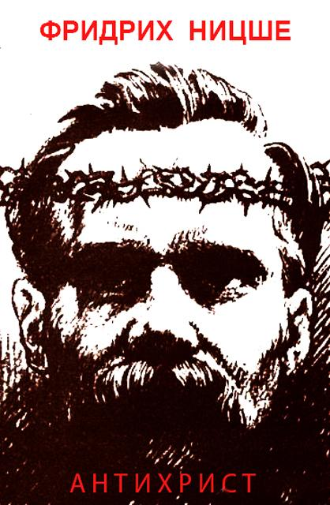

Занимательный труд известного и достаточно противоречивого философа, по которой, уверен, написано множество работ; с ними мне тягаться бессмысленно, да и не стоит такой цели. Не хочу пускаться в апологию христианства, но кратко остановиться на некоторых моментах, лежащих на поверхности, считаю возможным. Всё, что дальше, — исключительно личное видение.
Главная проблема Ницше, как мне кажется, — это отказ от самой идеи сверхсознательного (не только в узком психологическом смысле). Ницше не знает трансцендентного. Горы Заратустры высоки, но они находятся неизмеримо ниже Вечности. Отсюда желание укорениться в «жизни» (мне кажется, вопреки Заратустре), обращение к буддизму как нетеистическому decadence (причём, как я понял, он ограничивается Тхеравадой) и, следовательно, критика христианства как религии, отказывающейся от жизни. В целом, это так. Но это лишь свидетельствует о запредельности христианства, которую Ницше и не увидел.
Небольшое отступление. Обращение к «восточной мудрости» наивно (это не совсем относится к Ницше, он знает, что его родина — Гиперборея). И сейчас, даже больше, чем прежде, люди Запада обращаются к учениям Востока. Изучать — возможно, но не искать истины. Традиция (а Ницше — «сгоревший метеор Традиции», как сказал о нём Юлиус Эвола) европейского происхождения, происхождения северного, нордического, полярного. Традиция — это Коловрат, Полюс. Многие учения Востока демиургичны в своей сути, они не полярны. Проблема Эволы, который знал трансцендентное и прекрасно осмыслил Традицию, в том, что он относил христианство к «лунным религиям», религиям «женским» (как и Ницше в «Антихристе»), будто воспринимая лишь историческое христианство, уже связанное с социумом и государством. Повторюсь: христианство запредельно, оно «по ту сторону», поэтому оно и вне жизни.
Ницше провёл замечательный анализ христианства Христа (единственного христианина). Он написал всё верно. Но выводить христианство из иудаизма — ошибка. Ошибочно и такое негативное восприятие учения ап. Павла. Ошибочно, т.к. большая часть реакции вызвана фразой «Спасение от иудеев», которая является более поздней правкой (этот вопрос затрагивался, например, в программной для гностиков статье Д.Алексеева «Античное христианство и гностицизм»). Учение Павла необычайно глубоко (и, как писал Н.Бердяев, мало понято, особенно учение о дарах). Большая правда Ницше в том, что спасение верой — абсурд. Спасение может быть достигнуто только действием, практикой, подражанием. Правда и в том, что нет ничего более чуждого христианству, чем идея возмездия, наказания, мщения. Греха нет. «Снаружи» греха нет. Но он есть внутри. Понять это можно только лично, т.к. грех есть предательство Любви. Ницше сам прекрасно сформулировал: христианство — это опыт сердца.
Воля к жизни, воля к власти, чувство собственного достоинства и гордость приводят к идее иерархии.
«В каждом здоровом обществе выступают, обусловливая друг друга, три физиологически разнопритягательных типа, из которых каждый имеет свою собственную гигиену, свою собственную область труда, особый род чувства совершенства и мастерства. Природа, а не Ману отделяет одних — по преимуществу сильных духом, других — по преимуществу сильных мускулами и темпераментом и третьих, не выдающихся ни тем, ни другим — посредственных: последние, как большинство, первые, как элита. Высшая каста — я называю её кастой немногих — имеет, будучи совершенной, также и преимущества немногих: это значит — быть земными представителями счастья, красоты, доброты. Только наиболее одарённые духовно люди имеют разрешение на красоту, на прекрасное; только у них доброта не есть слабость. Pulchrum est paucorum hominum: доброе есть преимущество. [...] Они господствуют не потому, что хотят, но потому, что они существуют; им не предоставлена свобода быть вторыми.
Ницше отказывает христианству (религии чандалы) в элитарности. Однако, это не так. Гностиков — первых христиан — обвиняли в «духовном шовинизме», т.к. они делили людей на три типа: хиликов (плотских), психиков (душевных) и пневматиков (духовных). И всё же Ницше прав в том, что христианство — религия в том числе чандалы: каждый может стать пневматиком, преображение, инициация доступны всем. Это de jure. De facto же «немногих» немного.
В связи с этим интересна проблема моральности/аморальности человека («только у них доброта не есть слабость»). Пожалуй, из того, что мне знакомо, лучший анализ источника морали содержится в книге Отто Вейнингера «Пол и характер». Если кратко, то всё, что происходит извне, что навязано, чему человек научился — это не мораль, это аморально. Мораль вырастает изнутри, из центра личности. Поэтому не все высокоморальные люди моральны; и доброта некоторых есть слабость. Доброта же благородного и Благого (значение изначального эпитета Иисуса – χρηστος, позднее исправленного на χριστος (христос) – «помазанник, мессия», см. [1], [2]) – это превилегия, это воление, а не справедливость, равная для всех. И в этом свете христианство не есть только религия сострадания, но есть религия возвышения ближнего, т.к., признавая за мiром зло и страдание, христианство учит не только преодолевать страдания свои, но и сознательно и по своей воле помогать в деле освобождения ближнего. Это -- свобода. Но здесь стоит вспомнить Вышеславцева: высшая свобода безальтернативна, и достигший её уже не имеет другого выбора, как следовать ей.
С вопросом личности связано и «христианское желание» личного бессмертия. Но это не христианское желание, это желание самой личности, в том числе проистекающее и от «гордости», которой, по словам Ницше, в христианстве нет. (для разрешения этого противоречия, я думаю, следует отграничить «Эго» от «Я»). Христианские тексты полны призывов вспомнить о своём божественном происхождении, разве это не «гордость» в смысле, близком к ницшеанскому?
Ошибочна и критика католичества и протестантизма как христианства в целом. В частности — критика «эпилептоидности» святых и блаженных. Действительно, мистицизм и аскетика запада ориентированы скорее на чувственной экстатике, тогда как восточная, православная в частности, традиция основана на смирении и безмолвии.
Вообще, многое из «проклятия» направлено не против христианства, а против христиан. Останавливаться на этом не вижу смысла, всё давно проанализировано Н.Бердяевым в работе «О достоинстве христианства и недостоинствах христиан». К слову, со времени написания статьи ничего не изменилось.
В целом, «Антихрист» Ницше хорош. Не так радикален, как я предполагал, но всё равно интересен. В заключение процитирую самого автора:
Эта книга предназначена немногим. Может быть, никто из этих немногих ещё и не существует. Ими могут быть те, кто понимает моего Заратустру; как мог бы я смешаться с теми, у кого лишь сегодня открываются уши? Только послезавтра принадлежит мне. Иные люди родятся posthume 1.
1 — Посмертно (фр).